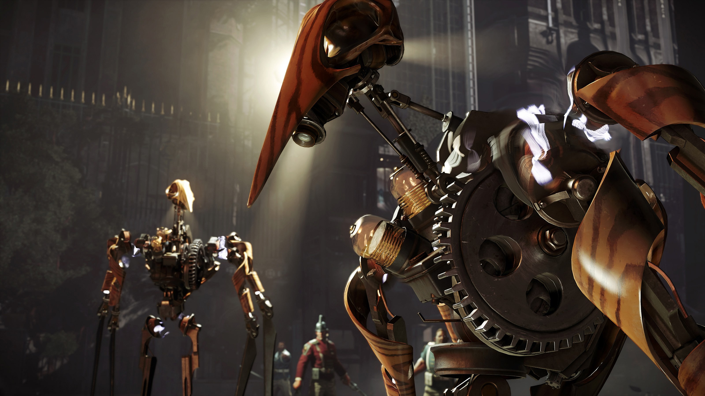

Dishonored 2
 Dishonored 2 wants to be called a classic correct continuation, but it will not be entirely true. The game indeed corrects many shortcomings of the original, where its strengths are more detailed. But if you did not like the first part, then the second one will not fix anything. It is completely built on the same mechanics and promotes the same values as the original game - it does not give new impressions, and you have to accept it. Next, I will tell why it is not even bad at all

Tomb Raider Movie
Restart the popular action franchise with elements of fantasy based on a video game about the clever and intelligent woman-archaeologist Lara Croft. The story of Lara's first expedition, which follows the traces of her mysteriously disappeared adventurer father. Its path lies to the islands near Japan, where semi-mythical tombs are located.
War Thunder celebrates it`s fifth
Bonuses, gifts, a variety of discounts in the game and in the store, competitions and a lot of events for every taste! For all of you. The celebration will last from October 27 to November 6, the time for each promotion is indicated in its description
Rui, a cheerful city dandy, a decipherer, a jeweler-half-educated and the author of articles on scientific magic, suffered a Major Failure, and now he is forced to return to his gypsy homeland, Latori. In search of quick earnings, Rui takes on the jewelry tools and finds the customer himself, and he instructs him to make a bracelet from a special tree for his bride in a month. Rui is not destined to finish work on the bracelet ... because he was stolen! Game is very special, but can be intresting for players, whi want to achieve quests.

ATS New Mexico
Discover the subtle beauty of the New Mexico landscape. Its nickname - �Land of Enchantment� - fits perfectly. A lot of unique natural scenery will accompany you during all hauls, two trips will never feel the same Spend your night, rest, refuel and repair your truck on one of the many unique truck stops around New Mexico's highways. Admire the red sunsets while driving past recognizable monumental rock formations
- 2017 -